gp7robot_descriptionThis guide explains everything in the GP7 pick-and-place project, assuming you start from zero in ROS 2, Gazebo and robot kinematics. It has three parts:
If you only have one hour, read chapter 8 (the big picture) and chapter 12 (the task, step by step); then come back to the foundations whenever a word is unclear. The glossary at the end defines every technical word used.
A computer model of a Yaskawa Motoman GP7 (a real 6-joint industrial arm that can lift 7 kg) stands in a simulated room made by Gazebo. On the floor are two boxes: a large blue Box A (30 × 30 × 20 cm, centred at x = 0.5 m, y = 0.5 m) and a small orange Box B (a 5 cm cube). A Python program, using ROS 2 to talk to the simulator, works out how every joint must turn (inverse kinematics), plans smooth motions (trajectory generation), and makes the robot pick Box B up, carry it upright, put it on the centre of Box A, let go, and lift its arm away. A small window (the GUI) lets you place Box B at a random reachable spot, start the task, and watch the joint angles live.
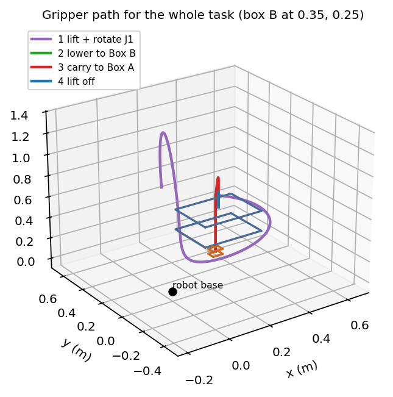
ROS 2 code lives in a workspace: a folder with a src/ subfolder that holds one
or more packages. Yours is:
gp7_ws/ # the workspace ├── src/ │ └── gp7robot_description/ # the one package (all the code) │ ├── package.xml # package name, dependencies (ROS reads this) │ ├── setup.py # how Python installs it + program names │ ├── gp7robot_description/ # the Python modules │ │ ├── kinematics.py # forward / inverse kinematics │ │ ├── trajectory.py # smooth motion profiles │ │ ├── pick_place.py # the task planner + ROS node │ │ ├── workspace.py # "is this Box B position reachable?" │ │ ├── reset_world.py # move Box B, send the arm home │ │ ├── gui.py # the control window │ │ └── manual_joint.py # move one joint by hand │ ├── launch/ # start-up scripts (Gazebo, RViz) │ ├── urdf/GP7.urdf # the robot's shape and joints (exported from SolidWorks) │ ├── meshes/*.STL # 3D shapes of each link │ ├── worlds/*.sdf # the Gazebo rooms (floor, Box A, Box B) │ └── docs/ # this guide, the report ├── build/ # made by colcon - temporary build files ├── install/ # made by colcon - the installed package (what ROS runs!) └── log/ # made by colcon - build logs
colcon is the ROS 2 build tool. It reads each package in src/ and copies or compiles
it into install/. For a Python package "building" mostly means copying the files and creating
small launcher programs. ROS always runs the copy in install/, not your files in
src/ (unless you build with --symlink-install). So after editing code you must build again.
cd ~/Documents/GitHub/YASCAWA_GP7_sim/gp7_ws colcon build --packages-select gp7robot_description # build just this package colcon build --symlink-install # (optional) link instead of copy: # Python edits then work without rebuilding
Package not found happensA new terminal does not know about ROS or your workspace. source runs a script that sets
environment variables (such as AMENT_PREFIX_PATH and PYTHONPATH) so the ros2
command can find packages. You need two: the ROS installation (the underlay) and your
workspace (the overlay).
source /opt/ros/lyrical/setup.bash # ROS 2 itself (often already in ~/.bashrc) source install/setup.bash # your workspace - in EVERY new terminal
Package 'gp7robot_description' not found means the terminal was not sourced with
install/setup.bash. Add it to ~/.bashrc to do it automatically.setup.py maps short program names to Python functions. ros2 run <package> <program>
starts one:
46 entry_points={ 47 'console_scripts': [ 48 'gp7_pick_place = gp7robot_description.pick_place:main', 49 'gp7_move_joint = gp7robot_description.manual_joint:main', 50 'gp7_reset_world = gp7robot_description.reset_world:main', 51 'gp7_gui = gp7robot_description.gui:main', 52 ], 53 },
| Command | What it starts |
|---|---|
ros2 run gp7robot_description gp7_pick_place | the planner – runs the task once (pick_place.main) |
ros2 run gp7robot_description gp7_gui | the control window |
ros2 run gp7robot_description gp7_reset_world | put Box B back, home the arm |
ros2 run gp7robot_description gp7_move_joint Joint2 0.3 | move one joint to 0.3 rad |
ros2 launch gp7robot_description gazebo_sim.launch.py | Gazebo + robot + bridge (+ the task) |
ros2 launch gp7robot_description display.launch.py | RViz viewer with joint sliders (no physics) |
The project is written in Python 3. These are the language features it uses, each with a tiny example.
Each .py file is a module. from .kinematics import forward_kinematics means "from the module
kinematics.py in this same package (the dot), take the function forward_kinematics".
from __future__ import annotationsdef horizontal_reach(position: Iterable[float]) -> float:
xyz = np.asarray(tuple(position), dtype=float)
return float(math.hypot(float(xyz[0]), float(xyz[1])))
The parts after : and -> are type hints: notes saying what types are expected
(here: anything you can loop over that holds floats; returns a float). Python does not enforce them; they
are documentation. np.ndarray | None means "a NumPy array or nothing".
selfclass PickPlaceController(Node): # a new class that extends ROS's Node class def __init__(self) -> None: # runs when an object is created super().__init__("gp7_pick_place_controller") # run Node's own setup first self.current_joint_positions = None # data stored on the object def run_demo(self) -> None: ... # a method; self = this object
A class is a blueprint; an object is one thing built from it. PickPlaceController(Node)
inherits from ROS's Node, so it gets all of Node's abilities (publishing, subscribing,
parameters, clock) and adds its own. Methods whose names start with _ are "private by
convention": helpers meant to be used only inside the class.
@dataclass(frozen=True)
class TrajectorySample:
time_from_start: float
positions: np.ndarray
velocities: np.ndarray
@dataclass writes the boring __init__ for you: TrajectorySample(0.5, q, v) makes an
object with those three fields. frozen=True makes it read-only.
NumPy gives fast arrays and linear algebra. Things used everywhere in this code:
| Code | Meaning |
|---|---|
np.array([1.0, 2.0, 3.0]) | a vector (1-D array) |
np.eye(4) | 4×4 identity matrix |
A @ B | matrix multiplication |
T[:3, :3], T[:3, 3] | top-left 3×3 block (rotation), first 3 entries of column 3 (position) |
M.T | transpose |
np.linalg.norm(v) | length of a vector |
np.linalg.solve(A, b) | solve A x = b |
np.cross(a, b) | cross product |
np.clip(q, lo, hi) | limit every value into [lo, hi] |
np.gradient(y, t, axis=0) | numerical derivative dy/dt |
np.interp(x, xp, fp) | linear interpolation in a table |
np.deg2rad, np.rad2deg | angle unit conversion (1 rad ≈ 57.3°) |
raise ValueError("...") stops the current function with an error message; try: ... except
ValueError as error: catches it. The planner raises ValueError whenever a plan is impossible
(target out of reach, IK fails, robot did not get there), and main() catches it and logs it.
subprocess.Popen([...]) starts another program (e.g. ros2 run ...) and keeps running.threading.Thread(target=f).start() runs f at the same time as the rest of the program.queue.Queue passes messages safely from a thread to the main program.ROS 2 (Robot Operating System 2) is not an operating system. It is a set of libraries and tools
that let many small programs work together on a robot by sending each other messages. The version
installed here is ROS 2 Lyrical (it lives in /opt/ros/lyrical).
A node is one program (or one object in a program) with one job. In this project:
| Node name | Made by | Job |
|---|---|---|
gp7_pick_place_controller | pick_place.py | plans and commands the task |
gp7_gui | gui.py | listens to joint states for the plots |
gp7_reset_world | reset_world.py | homes the arm |
gp7_manual_joint_commander | manual_joint.py | moves one joint |
parameter_bridge | ros_gz_bridge (installed) | connects ROS and Gazebo |
robot_state_publisher | installed | publishes the robot model + link positions (for RViz) |
A topic is a named channel, like a radio frequency. A node publishes messages on a topic; any node that subscribes to it receives them. Publisher and subscriber do not need to know about each other. Each topic carries one message type, a fixed structure of fields.
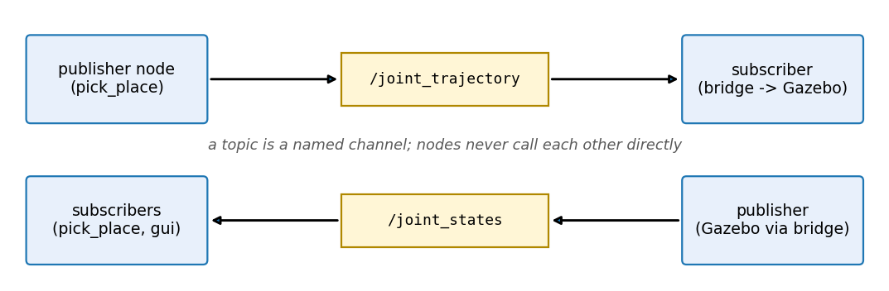
| Topic | Message type | Direction | Content |
|---|---|---|---|
/model/GP7Robot/joint_trajectory | trajectory_msgs/JointTrajectory | planner → Gazebo | a list of timed joint positions + velocities to follow |
/joint_states | sensor_msgs/JointState | Gazebo → everyone | current angle and speed of each joint |
/gp7/gripper/attach | std_msgs/Empty | planner → Gazebo | "glue Box B to the hand now" |
/gp7/gripper/detach | std_msgs/Empty | planner → Gazebo | "let go of Box B" |
/clock | rosgraph_msgs/Clock | Gazebo → everyone | the simulation time |
A JointTrajectory message looks like this (simplified):
header: { stamp: <time the trajectory starts> }
joint_names: [joint1, Joint2, Joint3, Join4, Join5, Joint6]
points:
- positions: [0.00, 0.00, 0.00, 0.00, 0.00, 0.00] velocities: [...] time_from_start: 0.000 s
- positions: [0.00, 0.00, 0.01, 0.00, 0.00, 0.00] velocities: [...] time_from_start: 0.005 s
- ... one point every 5 ms ...
In Python, creating a publisher and subscriber is one line each:
141 def __init__(self) -> None: 142 super().__init__("gp7_pick_place_controller") 143 # Box A centre at (0.5, 0.5, 0) on the floor, as set by the lecturer. 144 self.declare_parameter("box_a_x", 0.50) 145 self.declare_parameter("box_a_y", 0.50) 146 self.declare_parameter("box_a_top_z", 0.20) 147 self.declare_parameter("box_b_x", 0.35) 148 self.declare_parameter("box_b_y", 0.25) 149 self.declare_parameter("box_b_center_z", BOX_B_SIZE[2] / 2.0) 150 # Height above Box B for the initial lift and the joint-1 rotation; 151 # keeps the arm well above Box A (top at 0.20 m). 152 self.declare_parameter("clearance_height", 0.55) 153 # How far the empty gripper rises straight up after releasing Box B. 154 self.declare_parameter("retreat_height", 0.15) 155 self.declare_parameter("speed_scale", SAFE_SPEED_SCALE) 156 # Cartesian (tool) speed and acceleration limits for upright moves. 157 self.declare_parameter("cartesian_speed", CARTESIAN_SPEED) 158 self.declare_parameter("cartesian_acceleration", CARTESIAN_ACCELERATION) 159 # Radius of the arcs that round off the corners of a multi-leg path. 160 self.declare_parameter("blend_radius", BLEND_RADIUS) 161 162 self.trajectory_publisher = self.create_publisher( 163 JointTrajectory, "/model/GP7Robot/joint_trajectory", 10 164 ) 165 self.attach_publisher = self.create_publisher( 166 Empty, "/gp7/gripper/attach", 10 167 ) 168 self.detach_publisher = self.create_publisher( 169 Empty, "/gp7/gripper/detach", 10 170 ) 171 172 self.current_joint_positions: np.ndarray | None = None 173 self.latest_joint_state_names: tuple[str, ...] = () 174 self.joint_state_subscription = self.create_subscription( 175 JointState, "/joint_states", self._joint_state_callback, 10 176 )
create_subscription(type, topic, callback, 10): whenever a message arrives, ROS calls
callback(message). The 10 is the queue depth (how many messages to keep if the
program is busy).
Callbacks do not run by magic. ROS only delivers messages when the program asks it to, by
spinning. rclpy.spin(node) loops forever; rclpy.spin_once(node, timeout_sec=0.01)
handles whatever has arrived (waiting at most 10 ms) and returns. This project uses spin_once
inside its own loops, so it can wait for the robot while still receiving /joint_states:
221 def _sleep(self, seconds: float) -> None: 222 end_time = self._sim_now() + seconds 223 while rclpy.ok() and self._sim_now() < end_time: 224 rclpy.spin_once(self, timeout_sec=0.01)
A parameter is a named setting of a node that can be changed when starting it, without editing code. The node declares it with a default, then reads it:
self.declare_parameter("box_b_x", 0.35) # in __init__
x = float(self.get_parameter("box_b_x").value) # later
ros2 run gp7robot_description gp7_pick_place --ros-args -p box_b_x:=0.6 -p box_b_y:=-0.3
Chapter 16 lists every parameter of this project.
Gazebo can run slower (or faster) than real time. If the planner waited "2 real seconds" while the
simulator only advanced 1 simulated second, it would give up too early. With the parameter
use_sim_time:=true, a node's clock follows the /clock topic published by Gazebo, so
self.get_clock().now() returns simulated time. The planner and the GUI use sim time;
reset_world.py uses the wall clock (time.monotonic()) for its short waits.
A launch file is a Python script that starts many programs at once with the right settings.
ros2 launch gp7robot_description gazebo_sim.launch.py run_demo:=false runs the function
generate_launch_description() in that file, which returns the list of things to start.
run_demo:=false is a launch argument. Chapter 14 walks through it.
ros2 node list # which nodes are running? ros2 topic list # which topics exist? ros2 topic echo /joint_states # print the messages live (Ctrl+C to stop) ros2 topic hz /joint_states # how often are they published? ros2 topic info -v /model/GP7Robot/joint_trajectory # who publishes / subscribes? ros2 param list /gp7_pick_place_controller # parameters of a running node ros2 interface show trajectory_msgs/msg/JointTrajectory # fields of a message type rqt_graph # picture of nodes and topics
Gazebo Sim (command gz sim) is a physics simulator: it computes how bodies move under
gravity, motor torques and contacts, and draws them in 3D. It is a separate program from ROS with its own
message system ("gz topics"); the bridge connects the two.
.sdf file) describes the whole scene: physics settings, light, ground, objects.1<?xml version="1.0"?> 2<sdf version="1.9"> 3 <world name="gp7_pick_place"> 4 <physics name="gp7_physics" type="ignored"> 5 <max_step_size>0.001</max_step_size> 6 <real_time_factor>1.0</real_time_factor> 7 </physics> 8 <plugin filename="gz-sim-physics-system" name="gz::sim::systems::Physics"/> 9 <plugin filename="gz-sim-user-commands-system" name="gz::sim::systems::UserCommands"/> 10 <plugin filename="gz-sim-scene-broadcaster-system" name="gz::sim::systems::SceneBroadcaster"/>
max_step_size 0.001 means physics is computed every 1 ms (1000 times per simulated second);
real_time_factor 1.0 asks Gazebo to try to run at real speed. The plugins ("systems") add
features: physics, user commands (needed to teleport Box B), and the scene broadcaster (for the 3D view).
54 <!-- Box B starts at a fixed reachable location so the demo is repeatable. --> 55 <model name="BoxB"> 56 57 <pose>0.35 0.25 0.025 0 0 0</pose> 58 <link name="link"> 59 <inertial> 60 <mass>0.125</mass> 61 <inertia> 62 <ixx>0.0000520833</ixx><ixy>0</ixy><ixz>0</ixz> 63 <iyy>0.0000520833</iyy><iyz>0</iyz><izz>0.0000520833</izz> 64 </inertia> 65 </inertial> 66 <collision name="collision"> 67 <geometry><box><size>0.05 0.05 0.05</size></box></geometry> 68 <surface><friction><ode><mu>1.2</mu><mu2>1.2</mu2></ode></friction></surface> 69 </collision> 70 <visual name="visual"> 71 <geometry><box><size>0.05 0.05 0.05</size></box></geometry> 72 <material> 73 <ambient>0.95 0.35 0.06 1</ambient> 74 <diffuse>0.95 0.35 0.06 1</diffuse> 75 </material> 76 </visual> 77 </link> 78 </model>
The robot comes from SolidWorks as a URDF (Unified Robot Description Format) file: the ROS format for a robot's links, joints, meshes and limits. Gazebo's own format is SDF; Gazebo converts URDF to SDF when the robot is spawned. A URDF joint looks like this:
87 <joint 88 name="joint1" 89 type="revolute"> 90 <origin 91 xyz="0 0 0.190099999998071" 92 rpy="1.5707963267949 0 2.74626231701148" /> 93 <parent 94 link="base_link" /> 95 <child 96 link="Link 1" /> 97 <axis 98 xyz="0 1 0" /> 99 <limit 100 lower="-1.76541379939274" 101 upper="4.16870565738798" 102 effort="100" velocity="2.0" />
origin xyz rpy: where the joint sits relative to its parent link (metres; roll-pitch-yaw radians).axis: the rotation axis in the joint's own frame.limit lower/upper: allowed angle range in radians.joint1, Joint2, Joint3, Join4, Join5, Joint6. Every message must use
exactly these names, so the code copies them as they are (JOINT_NAMES in kinematics.py).The launch file edits the URDF in memory before spawning it (chapter 14) and adds four Gazebo systems:
| System | What it does here |
|---|---|
| JointTrajectoryController | listens on /model/GP7Robot/joint_trajectory; for every joint runs a PID
controller that applies torque so the joint follows the trajectory points in time. |
| JointStatePublisher | publishes every joint's angle and speed (bridged to /joint_states). |
| DetachableJoint | the "gripper": on a message on /gp7/gripper/attach it creates a fixed joint between
Link6 and Box B (keeping their current relative pose); on /gp7/gripper/detach it removes it.
There are no real fingers squeezing the box: this is the usual way to simulate grasping reliably. |
| self_collide | lets the robot's own links collide with each other. |
ros_gz_bridge parameter_bridge is given a list of topic@ROS_type[gz_type or ]gz_type
strings. [ means Gazebo → ROS, ] means ROS → Gazebo:
198 bridge = Node( 199 package="ros_gz_bridge", 200 executable="parameter_bridge", 201 arguments=[ 202 "/clock@rosgraph_msgs/msg/Clock[gz.msgs.Clock", 203 "/model/GP7Robot/joint_trajectory@trajectory_msgs/msg/JointTrajectory]gz.msgs.JointTrajectory", 204 "/gp7/gripper/attach@std_msgs/msg/Empty]gz.msgs.Empty", 205 "/gp7/gripper/detach@std_msgs/msg/Empty]gz.msgs.Empty", 206 "/world/gp7_pick_place/model/GP7Robot/joint_state@sensor_msgs/msg/JointState[gz.msgs.Model", 207 ], 208 remappings=[("/world/gp7_pick_place/model/GP7Robot/joint_state", "/joint_states")], 209 output="screen",
The last line also remaps Gazebo's long joint-state topic name to the short /joint_states.
A service is a request/answer call (unlike a topic, which is one-way). The world offers
/world/gp7_pick_place/set_pose; reset_world.py calls it with the gz service command to put Box B
anywhere instantly (chapter 13).
RViz only displays a robot from its joint angles; there is no physics, gravity or contact.
display.launch.py opens RViz with a slider window (joint_state_publisher_gui), which is a good way
to learn what each joint does. Gazebo simulates: motors, gravity, boxes falling.
Kinematics is the geometry of motion: where things are and how they move, ignoring the forces. For a robot arm, two questions matter:
All positions are in metres in the robot's base frame, which is the world frame: the origin is at the bottom centre of the robot, z points up, x and y lie on the floor. Box A's centre is at (0.5, 0.5); its top is at z = 0.20. Angles are in radians in the code (π rad = 180°).
A robot's state can be described two ways:
Moving in a straight line in joint space (all joints turning at proportional speeds) makes the hand move along a curve. To move the hand in a straight line you must compute IK at many points along the line. This project uses both: joint-space moves when nothing is held, straight lines near and with the box.
A coordinate frame is an origin plus three perpendicular axes. Every link of the robot has one. To describe frame B as seen from frame A you need:
A point known in B is converted to A by rotating then shifting: PA = R PB + t.
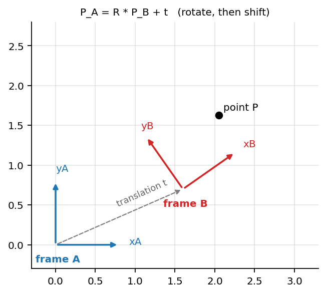
Robotics packs R and t into one 4×4 homogeneous transform, so that chaining frames is just multiplying matrices:
┌ R t ┐ ┌ r11 r12 r13 tx ┐
T = │ │ e.g. T = │ r21 r22 r23 ty │ T_AC = T_AB · T_BC
└ 0 1 ┘ │ r31 r32 r33 tz │
└ 0 0 0 1 ┘
In the code: T[:3, :3] is R and T[:3, 3] is t. pose(position, rotation) in kinematics.py
builds such a matrix.
A 6-joint arm is a chain: base → link 1 → link 2 → … → link 6. The DH convention describes each step of the chain with just four numbers. Each joint i rotates about its own z-axis by the joint angle, and:
A_i = Rz(θ_i) · Tz(d_i) · Tx(a_i) · Rx(α_i) with θ_i = θ_offset,i + q_i
θ (theta) rotate about z (this is where the joint angle q_i goes)
d slide along z
a slide along the new x ("link length")
α (alpha) twist about the new x (angle between this joint axis and the next)
Written out, one DH step is this matrix (exactly what _dh_transform returns):
┌ cosθ -sinθ·cosα sinθ·sinα a·cosθ ┐
A_i = │ sinθ cosθ·cosα -cosθ·sinα a·sinθ │
│ 0 sinα cosα d │
└ 0 0 0 1 ┘
The GP7 table was derived from the joint axes and origins in GP7.urdf. The large θ offsets
(e.g. −112.65°) exist because the CAD export's "zero" pose is not the textbook DH zero; the offsets make
q = 0 mean the same pose as in the URDF.
34DH_TABLE = ( 35 DHRow("S", math.radians(-112.650759799361), 0.330000000000, 0.040000000186, math.radians(-90.0)), 36 DHRow("L", math.radians(-104.091530693979), 0.000000000000, 0.445000000000, math.radians(0.0)), 37 DHRow("U", math.radians(174.798565581791), 0.000000000000, 0.039999999934, math.radians(-90.0)), 38 DHRow("R", math.radians(-9.999933172264), 0.440000000001, 0.000000000000, math.radians(90.0)), 39 DHRow("B", math.radians(-177.345549555221), 0.000000000000, 0.000000000000, math.radians(-90.0)), 40 DHRow("T", math.radians(0.0), -0.058893322297, 0.000000000000, math.radians(0.0)), 41)
| Joint | Yaskawa name | Moves | d (m) | a (m) | α |
|---|---|---|---|---|---|
| 1 | S (swing) | whole arm left/right about the vertical | 0.330 | 0.040 | −90° |
| 2 | L (lower arm) | lower arm forward/back | 0 | 0.445 | 0° |
| 3 | U (upper arm) | upper arm up/down | 0 | 0.040 | −90° |
| 4 | R (wrist roll) | twists the forearm | 0.440 | 0 | +90° |
| 5 | B (wrist bend) | bends the wrist | 0 | 0 | −90° |
| 6 | T (tool turn) | spins the flange | −0.059 | 0 | 0° |
So the base column is 0.33 m tall, the lower arm 0.445 m, the forearm 0.44 m: roughly 0.93 m of
horizontal reach, which is where MAX_HORIZONTAL_REACH = 0.927 comes from.
FK is just "multiply the six DH matrices in order", then one fixed rotation so that the result matches
the CAD Link6 frame used by Gazebo:
98def _dh_transform(row: DHRow, joint_angle: float) -> np.ndarray: 99 theta = row.theta_offset + joint_angle 100 ct, st = math.cos(theta), math.sin(theta) 101 ca, sa = math.cos(row.alpha), math.sin(row.alpha) 102 return np.array( 103 [ 104 [ct, -st * ca, st * sa, row.a * ct], 105 [st, ct * ca, -ct * sa, row.a * st], 106 [0.0, sa, ca, row.d], 107 [0.0, 0.0, 0.0, 1.0], 108 ], 109 dtype=float, 110 )
113def forward_kinematics(joint_positions: Iterable[float]) -> np.ndarray: 114 """Return the 4x4 base-to-Link6 transform for six joint angles in radians.""" 115 q = np.asarray(tuple(joint_positions), dtype=float) 116 if q.shape != (6,): 117 raise ValueError("GP7 forward kinematics requires six joint angles") 118 transform = np.eye(4) 119 for row, angle in zip(DH_TABLE, q): 120 transform = transform @ _dh_transform(row, float(angle)) 121 transform[:3, :3] = transform[:3, :3] @ DH_TO_LINK6_ROTATION 122 return transform
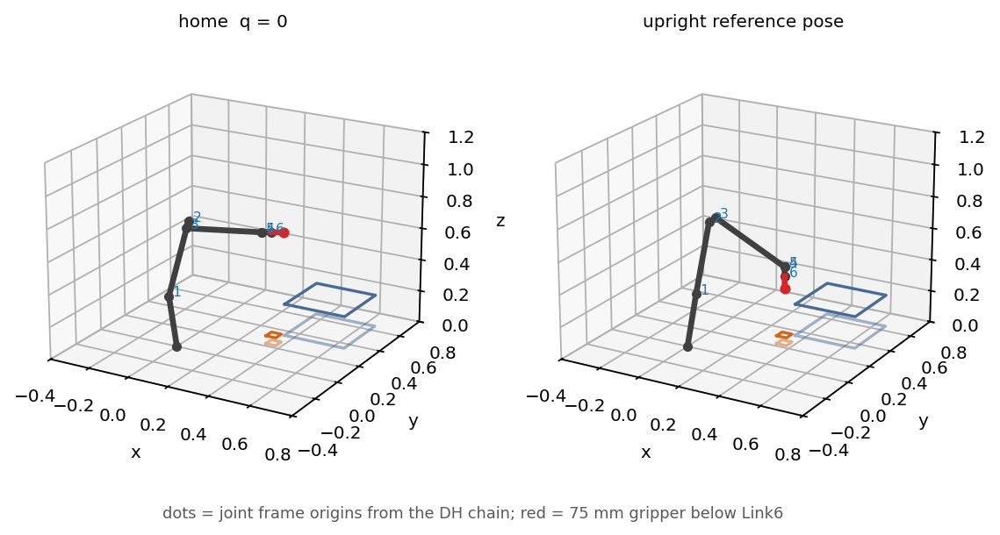
The gripper is mounted 75 mm (GRIPPER_LINK_OFFSET) below Link6, and it is mounted so that in the
UPRIGHT_REFERENCE_CONFIGURATION pose it points straight down. The planner keeps Link6's orientation
exactly equal to its orientation in that pose (UPRIGHT_LINK6_ROTATION) whenever the box is near
or held. That is what "keeping the box upright" means mathematically: the target of every IK solve has
the same rotation matrix, only the position changes.
Every joint has a minimum and maximum angle (JOINT_LIMITS, radians):
| Joint | 1 | 2 | 3 | 4 | 5 | 6 |
|---|---|---|---|---|---|---|
| min (°) | −101.2 | −79.1 | −4.8 | −190.0 | −137.7 | −138.8 |
| max (°) | 238.8 | 105.9 | 255.2 | 190.0 | 132.3 | 221.0 |
The comments in kinematics.py explain two corrections made to the SolidWorks export (joint 3's range was mirrored, joint 4's was far too small).
FK is a formula. IK means solving that formula backwards: 6 unknown angles, 6 equations (3 for position, 3 for orientation), all full of sines and cosines. There may be no solution (target too far), or several: a 6-joint arm typically has up to 8 ways ("branches") to reach the same pose: elbow up or down, shoulder left or right, wrist flipped or not.
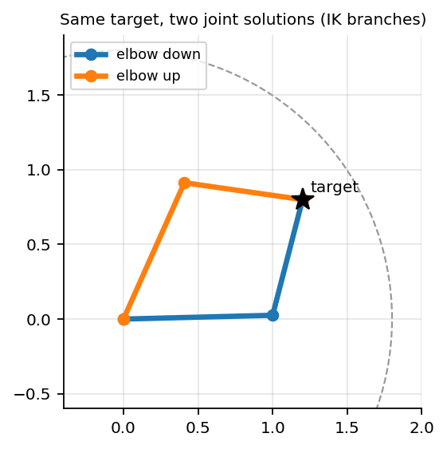
Some robots have closed-form IK formulas. This project uses a numerical method instead: start from a guess (the seed), look at the error, nudge the joints to reduce it, repeat. A numerical method returns the solution nearest the seed, which is useful: seeding with the current joint angles keeps the arm on the same branch, so it does not suddenly flip.
The Jacobian J(q) is a 6×6 matrix that says how the hand moves when the joints move a little:
┌ v ┐ v = hand linear velocity (3) │ │ = J(q) · q̇ ω = hand angular velocity (3) └ ω ┘ q̇ = joint velocities (6)
For a revolute joint i with axis zi−1 passing through point pi−1, column i is:
J_v,i = z_(i-1) × (p_hand − p_(i-1)) (turning about an axis moves the hand sideways) J_ω,i = z_(i-1) (and rotates it about that axis)
That is exactly what the code computes: walk along the chain, remember each joint's axis and origin, then fill in the columns.
125def geometric_jacobian(joint_positions: Iterable[float]) -> np.ndarray: 126 """Return the 6x6 geometric Jacobian in the base frame.""" 127 q = np.asarray(tuple(joint_positions), dtype=float) 128 if q.shape != (6,): 129 raise ValueError("GP7 Jacobian requires six joint angles") 130 131 transform = np.eye(4) 132 origins: list[np.ndarray] = [] 133 axes: list[np.ndarray] = [] 134 for row, angle in zip(DH_TABLE, q): 135 origins.append(transform[:3, 3].copy()) 136 axes.append(transform[:3, 2].copy()) 137 transform = transform @ _dh_transform(row, float(angle)) 138 139 tool_position = transform[:3, 3] 140 jacobian = np.zeros((6, 6), dtype=float) 141 for index, (origin, axis) in enumerate(zip(origins, axes)): 142 jacobian[:3, index] = np.cross(axis, tool_position - origin) 143 jacobian[3:, index] = axis 144 return jacobian
Position error is easy: target position − current position. For orientation the code computes the rotation
that takes the current orientation to the target, R_err = R_target · R_currentᵀ, and converts it to a
rotation vector (axis × angle, 3 numbers) with _rotation_vector. The 6-number error
e = (position error, rotation vector) is what IK drives to zero.
If the hand must move by e, we want the joint change Δq with J Δq ≈ e. J cannot simply be inverted: near a singularity (e.g. arm fully stretched, or two wrist axes lined up) J loses rank and the inverse explodes into huge joint jumps. Damped least squares (also called Levenberg–Marquardt) adds a small "damping" λ that trades a little accuracy for stability:
Δq = Jᵀ (J Jᵀ + λ² I)⁻¹ e
Big λ → small, safe steps; small λ → fast, accurate steps. The code adapts λ every iteration: if a step
made the error smaller it is accepted and λ shrinks (× 0.75, not below 0.008); if not, the step is
rejected and λ grows (× 2, up to 0.4). Steps are also limited to 0.2 rad per joint and clipped to the
joint limits. It stops when position error ≤ tolerance and orientation error ≤ tolerance (the planner
asks for 0.01 mm and 0.006°), and raises ValueError if 250 iterations are not enough.
181def inverse_kinematics( 182 target: np.ndarray, 183 seed: Iterable[float] | None = None, 184 *, 185 position_tolerance: float = 0.003, 186 orientation_tolerance: float = math.radians(2.0), 187 max_iterations: int = 250, 188) -> np.ndarray: 189 """Solve a pose target with a limit-aware damped least-squares iteration. 190 191 ``target`` is a base-to-Link6 4x4 transform. The returned angles use the 192 CAD URDF joint zero conventions and are constrained to the exported joint 193 limits. 194 """ 195 target = np.asarray(target, dtype=float) 196 if target.shape != (4, 4): 197 raise ValueError("IK target must be a 4x4 homogeneous transform") 198 q = np.zeros(6, dtype=float) if seed is None else np.asarray(tuple(seed), dtype=float).copy() 199 if q.shape != (6,): 200 raise ValueError("IK seed must contain six joint angles") 201 q = np.clip(q, JOINT_LIMITS[:, 0], JOINT_LIMITS[:, 1]) 202 203 damping = 0.035 204 best_error = math.inf 205 best_q = q.copy() 206 for _ in range(max_iterations): 207 current = forward_kinematics(q) 208 position_error = target[:3, 3] - current[:3, 3] 209 orientation_error = _rotation_vector(target[:3, :3] @ current[:3, :3].T) 210 error = np.concatenate((position_error, orientation_error)) 211 position_norm = float(np.linalg.norm(position_error)) 212 orientation_norm = float(np.linalg.norm(orientation_error)) 213 score = position_norm + 0.20 * orientation_norm 214 if score < best_error: 215 best_error, best_q = score, q.copy() 216 if position_norm <= position_tolerance and orientation_norm <= orientation_tolerance: 217 return q 218 219 jacobian = geometric_jacobian(q) 220 normal = jacobian @ jacobian.T + damping * damping * np.eye(6) 221 try: 222 delta = jacobian.T @ np.linalg.solve(normal, error) 223 except np.linalg.LinAlgError: 224 damping *= 4.0 225 continue 226 maximum_step = float(np.max(np.abs(delta))) 227 if maximum_step > 0.20: 228 delta *= 0.20 / maximum_step 229 230 candidate = np.clip(q + delta, JOINT_LIMITS[:, 0], JOINT_LIMITS[:, 1]) 231 candidate_pose = forward_kinematics(candidate) 232 candidate_error = np.concatenate( 233 ( 234 target[:3, 3] - candidate_pose[:3, 3], 235 _rotation_vector(target[:3, :3] @ candidate_pose[:3, :3].T), 236 ) 237 ) 238 candidate_score = float(np.linalg.norm(candidate_error[:3])) + 0.20 * float( 239 np.linalg.norm(candidate_error[3:]) 240 ) 241 if candidate_score < score: 242 q = candidate 243 damping = max(0.008, damping * 0.75) 244 else: 245 damping = min(0.4, damping * 2.0) 246 247 best_pose = forward_kinematics(best_q) 248 position_error = float(np.linalg.norm(target[:3, 3] - best_pose[:3, 3])) 249 orientation_error = float( 250 np.linalg.norm(_rotation_vector(target[:3, :3] @ best_pose[:3, :3].T)) 251 ) 252 raise ValueError( 253 "No IK solution within tolerance: " 254 f"position error {position_error:.4f} m, orientation error " 255 f"{math.degrees(orientation_error):.2f} deg" 256 )
236 def _solve(self, xyz: np.ndarray, seed: np.ndarray) -> np.ndarray: 237 if horizontal_reach(xyz) > MAX_HORIZONTAL_REACH: 238 raise ValueError( 239 f"Target ({xyz[0]:.3f}, {xyz[1]:.3f}, {xyz[2]:.3f}) m is " 240 f"{horizontal_reach(xyz):.3f} m from the base; GP7 maximum " 241 f"horizontal reach is {MAX_HORIZONTAL_REACH:.3f} m" 242 ) 243 target = pose(xyz, UPRIGHT_LINK6_ROTATION) 244 # Tight tolerances: with the default (3 mm / 2 deg) a seeded solve 245 # often returns the seed unchanged, so densely sampled paths become 246 # a staircase of stalls and jumps instead of a smooth line. 247 return inverse_kinematics( 248 target, 249 seed, 250 position_tolerance=IK_POSITION_TOLERANCE, 251 orientation_tolerance=IK_ORIENTATION_TOLERANCE, 252 )
UPRIGHT_LINK6_ROTATION (box upright).The workspace is the set of positions the hand can reach. With a fixed orientation (straight down) it
is smaller than the full reach: near the base the arm cannot fold tightly enough, and far away the wrist cannot
point down. Behind the robot (negative x) the planner's seeded IK often lands on a branch that cannot hold the
orientation. workspace.py tests each candidate Box B position by running the real planning steps
(chapter 11). The map below was computed that way:
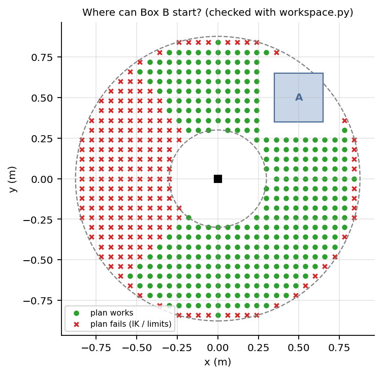
A path is a shape in space (e.g. "straight line from A to B"). A trajectory is a path plus timing: where to be at every instant. Good timing matters as much as a good path: a robot that starts or stops abruptly shakes, overshoots, and can throw the box.
The simplest profile is the trapezoid: accelerate at a constant rate, cruise, decelerate. Its acceleration jumps instantly between 0 and ±amax (infinite jerk at four points). An S-curve ramps acceleration smoothly. This project shapes each acceleration ramp as a sin² pulse, so acceleration and jerk are continuous and start and end at zero.
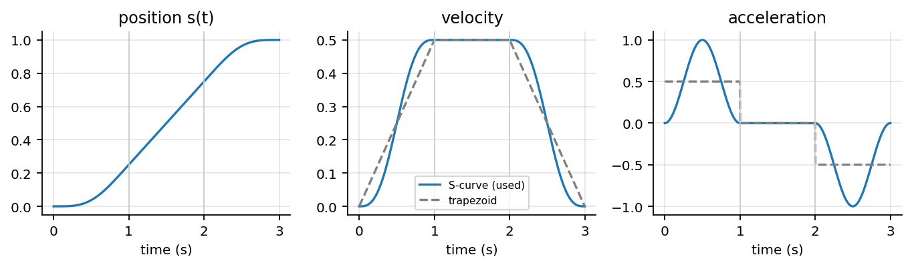
acceleration during a ramp of length Ta: a(t) = A · sin²(π t / Ta) velocity reached at the end of the ramp: v = A · Ta / 2 ⇒ A = 2 v / Ta
scurve_segment: synchronised joint movesFor joint-space moves, all 6 joints share one normalised progress value s(t) going 0 → 1, so they start and stop together and the joint-space path stays a straight line. The move is split into thirds (accelerate, cruise, decelerate). The duration T is the smallest value that respects every joint's speed and acceleration limits:
T = max over joints of max( 1.5·|Δq| / v_max , √(9·|Δq| / a_max) )
21def scurve_segment( 22 start: Iterable[float], 23 goal: Iterable[float], 24 max_velocities: Iterable[float], 25 max_accelerations: Iterable[float], 26 *, 27 sample_period: float = 0.02, 28) -> list[TrajectorySample]: 29 """Create a synchronized rest-to-rest S-curve trajectory. 30 31 During each ramp the acceleration follows a sin^2 pulse, so acceleration 32 and jerk are both continuous and start/end at zero (no step changes in 33 acceleration like a trapezoid, and no jerk spikes like a cosine ramp). 34 The profile is split into thirds: accelerate, cruise, decelerate. All 35 joints share one normalised path parameter s(t) in [0, 1], so they start 36 and stop together and the joint-space path is unchanged. 37 38 With ramp time Ta = T / 3 the normalised peak velocity is 1.5 / T and the 39 peak acceleration is 2 * (1.5 / T) / Ta = 9 / T**2, which gives the 40 shortest T that respects every joint's limits. 41 """ 42 q0 = np.asarray(tuple(start), dtype=float) 43 q1 = np.asarray(tuple(goal), dtype=float) 44 vmax = np.asarray(tuple(max_velocities), dtype=float) 45 amax = np.asarray(tuple(max_accelerations), dtype=float) 46 if q0.ndim != 1 or q0.shape != q1.shape or q0.shape != vmax.shape or q0.shape != amax.shape: 47 raise ValueError("Start, goal, velocity, and acceleration arrays must have the same shape") 48 if np.any(vmax <= 0.0) or np.any(amax <= 0.0) or sample_period <= 0.0: 49 raise ValueError("Limits and sample period must be positive") 50 51 delta = q1 - q0 52 distance = np.abs(delta) 53 if float(np.max(distance, initial=0.0)) <= 1.0e-12: 54 return [ 55 TrajectorySample(0.0, q0.copy(), np.zeros_like(q0)), 56 TrajectorySample(sample_period, q1.copy(), np.zeros_like(q1)), 57 ] 58 59 duration = float( 60 np.max( 61 np.maximum( 62 1.5 * distance / vmax, 63 np.sqrt(9.0 * distance / amax), 64 ) 65 ) 66 ) 67 ramp = duration / 3.0 68 peak = 1.0 / (duration - ramp) # normalised cruise velocity 69 accel_peak = 2.0 * peak / ramp # peak of the sin^2 acceleration pulse 70 71 def profile(t: float) -> tuple[float, float]: 72 """Normalised position s and velocity ds/dt at time t.""" 73 if t <= 0.0: 74 return 0.0, 0.0 75 if t >= duration: 76 return 1.0, 0.0 77 if t < ramp: 78 # a(t) = A sin^2(pi t / Ta), integrated twice from rest. 79 phase = 2.0 * math.pi * t / ramp 80 return ( 81 accel_peak 82 * (t * t / 4.0 + ramp * ramp / (8.0 * math.pi**2) * (math.cos(phase) - 1.0)), 83 accel_peak * (t / 2.0 - ramp / (4.0 * math.pi) * math.sin(phase)), 84 ) 85 if t <= duration - ramp: 86 return 0.5 * peak * ramp + peak * (t - ramp), peak 87 s_mirror, v_mirror = profile(duration - t) 88 return 1.0 - s_mirror, v_mirror 89 90 times = list(np.arange(0.0, duration, sample_period)) 91 times.append(duration) 92 samples: list[TrajectorySample] = [] 93 for t in times: 94 s, v = profile(float(t)) 95 samples.append(TrajectorySample(float(t), q0 + delta * s, delta * v)) 96 samples[-1] = TrajectorySample(duration, q1.copy(), np.zeros_like(q1)) 97 return samples
path_speed_profile: tool speed along a Cartesian pathFor straight-line moves of the tool, the thirds rule wastes time on long paths (it would spend two thirds
of the move speeding up and slowing down). path_speed_profile uses the same sin² ramps, but the
ramp time comes from the acceleration limit, Ta = 2v/a (0.25 m/s and 0.40 m/s² → 1.25 s), and the tool
cruises at full speed for the rest. If the path is too short to reach full speed, the peak speed is lowered to
√(a·L/2).
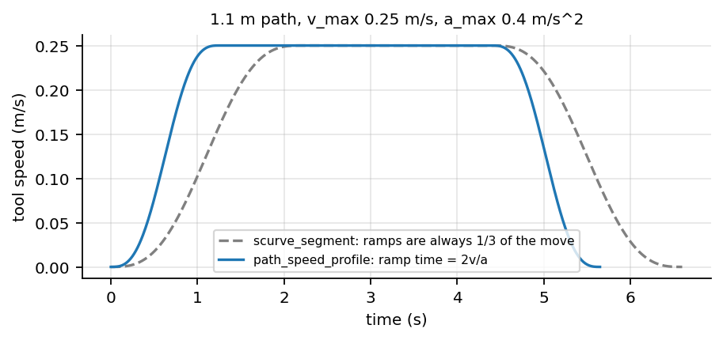
When two moves are chained, stopping at the corner wastes time and looks jerky. Two techniques are used:
superpose, joint space): start the next move while the previous one is
still decelerating, and add their displacements. Used for "lift the arm, then rotate joint 1": the rotation
starts when the lift is 2/3 done (BLEND_START_FRACTION).rounded_polyline, Cartesian): replace each sharp corner of the path by a
circular arc tangent to both straight legs, then run one speed profile over the whole length. The tool
keeps a constant speed through the corner.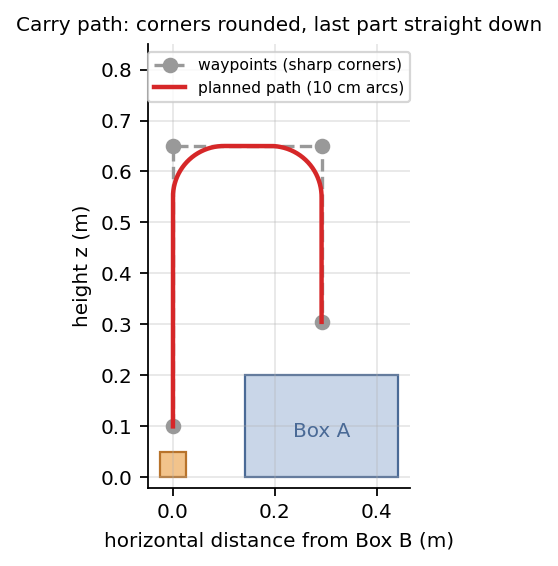
A trajectory message is a list of points; the code samples the profile every SAMPLE_PERIOD = 0.005 s.
The comment in pick_place.py explains why it is so dense: Gazebo's JointTrajectoryController does not
interpolate between points; its target steps from one point to the next. The PID's D term turns
each step into a torque kick. With a point every 5 physics steps, the steps are tiny and the motion is smooth.
A motor does not know how to "go to 30°"; it can only apply torque. A PID controller computes the torque from the error e = target − actual:
torque = Kp·e + Ki·∫e dt + Kd·de/dt
─┬── ───┬──── ───┬───
│ │ └ D: brakes when the error closes fast → less overshoot
│ └ I: grows while an error persists → removes steady sag (gravity)
└ P: pushes harder the further away it is
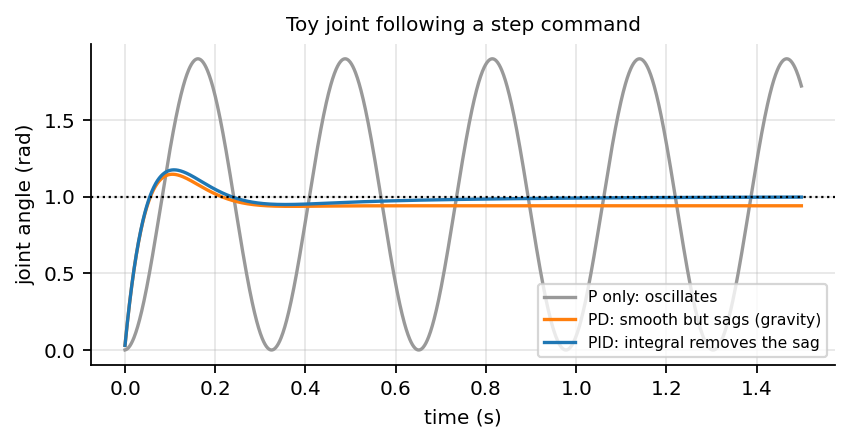
The gains used for the GP7 are set in the launch file. Big joints (1–3) carry the whole arm and get large gains and torque limits; the wrist gets small ones. Only joints fighting gravity (2, 3, 5) get an I term; joint 1 rotates about a vertical axis, so gravity does not pull it and an I term would only cause overshoot.
| Joint | 1 | 2 | 3 | 4 | 5 | 6 |
|---|---|---|---|---|---|---|
| Kp | 180 | 180 | 150 | 35 | 25 | 15 |
| Ki | 0 | 120 | 100 | 0 | 8 | 0 |
| Kd | 28 | 28 | 24 | 7 | 5 | 3 |
| torque limit (N·m) | 260 | 260 | 220 | 80 | 55 | 35 |
Because a PID always lags a little, the planner does not assume the robot arrived when the trajectory
time is over: it watches /joint_states until every joint is within 2° of the goal for 0.25 s (chapter 12).
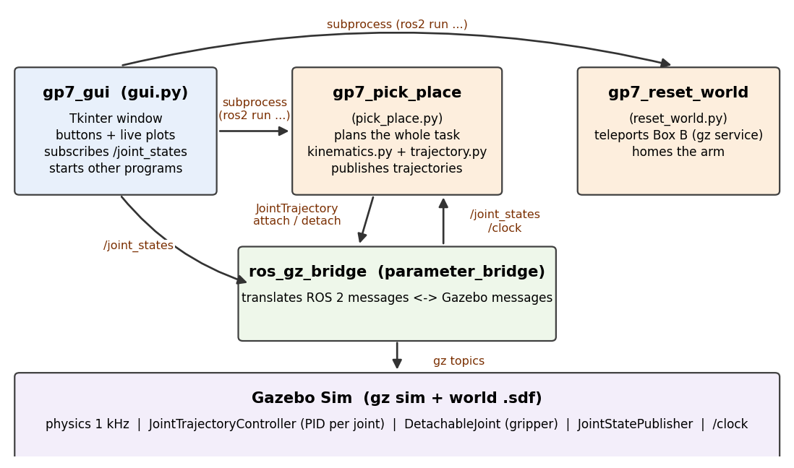
ros2 launch gp7robot_description gazebo_sim.launch.py run_demo:=false starts Gazebo with the
world, the bridge and robot_state_publisher; after 5 s it spawns the robot. With run_demo:=false it
does not start the planner.ros2 run gp7robot_description gp7_gui opens the window. It subscribes to
/joint_states and draws plots.random_box_b() (workspace.py) in a background thread.
It tries random positions until the full plan works for one, writes it into the x/y fields, and runs
gp7_reset_world with that x/y: Box B is teleported, the gripper is released, and the arm goes home.gp7_pick_place with box_b_x/box_b_y parameters. The planner
waits for the bridge, plans each stage, publishes trajectories, watches /joint_states until each stage
is reached, sends attach/detach, and exits when done. Its log appears in the GUI.| File | Lines | Role | Uses ROS? |
|---|---|---|---|
| kinematics.py | ~270 | DH table, FK, Jacobian, IK, joint limits | no (pure maths) |
| trajectory.py | ~220 | speed profiles, blending, building the ROS message | only the message types |
| pick_place.py | ~550 | path planning + the task + executing on Gazebo | yes (a node) |
| workspace.py | ~120 | offline "is this Box B position OK?" + random placement | no |
| reset_world.py | ~150 | detach, teleport Box B, home the arm | yes |
| gui.py | ~430 | window, buttons, live plots | yes |
| manual_joint.py | ~105 | command one joint from the terminal | yes |
| launch/gazebo_sim.launch.py | ~260 | starts everything, adds gripper and plugins to the robot | launch |
Pure mathematics: no ROS. Everything about the robot's geometry lives here.
| Name | What it is |
|---|---|
JOINT_NAMES | the 6 joint names exactly as in the URDF |
DHRow, DH_TABLE | the DH parameters (chapter 5.4) |
JOINT_LIMITS | 6×2 array [min, max] in radians |
MAX_JOINT_SPEEDS | datasheet maximum speeds (375, 315, 410, 550, 550, 1000 °/s) |
ACCELERATION_LIMITS | conservative accelerations used for planning (rad/s²) |
UPRIGHT_REFERENCE_CONFIGURATION | the pose that defines "gripper straight down"; also the IK seed |
DH_TO_LINK6_ROTATION | fixed rotation from the last DH frame to the CAD Link6 frame |
_dh_transform(row, angle) | one 4×4 DH matrix |
forward_kinematics(q) | 4×4 pose of Link6 for joint angles q |
geometric_jacobian(q) | 6×6 Jacobian |
_rotation_vector(R) | rotation matrix → axis·angle vector (with a special case near 180°) |
inverse_kinematics(target, seed, ...) | damped least squares IK |
pose(position, rotation) | build a 4×4 matrix |
horizontal_reach(p) | √(x² + y²) |
63# Joint maximum speeds from the GP7 column of the supplied GP7/GP8 datasheet. 64MAX_JOINT_SPEEDS = np.deg2rad(np.array([375.0, 315.0, 410.0, 550.0, 550.0, 1000.0])) 65 66# Conservative joint acceleration limits (rad/s^2) used for planned moves. 67ACCELERATION_LIMITS = np.array([0.45, 0.45, 0.55, 0.80, 0.80, 1.00]) 68 69# Reference pose that defines the gripper mount and the "upright" Link6 70# orientation. In this pose the flange points straight down above Box B 71# (flange at 0.35, 0.25, 0.42 m), so the gripper is mounted coaxially with the 72# joint-6 axis: rotating joint 6 only spins the gripper instead of swinging it 73# into Link5. The pick/place solver also seeds IK from this pose. 74UPRIGHT_REFERENCE_CONFIGURATION = np.array( 75 [ 76 2.58637615, 77 0.37832553, 78 3.91332751, 79 0.17453176, 80 0.71113281, 81 0.0, 82 ], 83 dtype=float, 84)
source install/setup.bash && python3 >>> import numpy as np >>> from gp7robot_description.kinematics import * >>> T = forward_kinematics(np.zeros(6)); print(T.round(3)) # where is Link6 at home? >>> q = inverse_kinematics(T, seed=np.full(6, 0.1)); print(q.round(4)) # back to ~zeros >>> forward_kinematics(UPRIGHT_REFERENCE_CONFIGURATION)[:3, 3] # flange above Box B
Turns "go from here to there" into a list of timed samples, and packs samples into a ROS message.
14@dataclass(frozen=True) 15class TrajectorySample: 16 time_from_start: float 17 positions: np.ndarray 18 velocities: np.ndarray
Returns samples whose "position" is the distance travelled along the path (metres) and whose "velocity"
is the tool speed. The profile(t) function has three cases (ramp up, cruise, ramp down);
ramp down is computed by mirroring ramp up: length − s(duration − t).
100def path_speed_profile( 101 length: float, 102 max_speed: float, 103 max_acceleration: float, 104 *, 105 sample_period: float = 0.02, 106) -> list[TrajectorySample]: 107 """Rest-to-rest profile along a path of ``length`` metres. 108 109 Same sin^2 acceleration pulse as ``scurve_segment`` (continuous 110 acceleration and jerk), but the ramp time comes from the acceleration 111 limit (Ta = 2 v / a) instead of always being a third of the move, so a 112 long path cruises at full speed for most of its length rather than 113 spending two thirds of the time speeding up and slowing down. 114 Positions and velocities are 1-element arrays (distance along the path). 115 """ 116 if length <= 0.0 or max_speed <= 0.0 or max_acceleration <= 0.0: 117 raise ValueError("Length, speed and acceleration must be positive") 118 speed = max_speed 119 ramp = 2.0 * speed / max_acceleration 120 if speed * ramp > length: # too short to reach full speed 121 speed = math.sqrt(max_acceleration * length / 2.0) 122 ramp = 2.0 * speed / max_acceleration 123 cruise = (length - speed * ramp) / speed 124 duration = 2.0 * ramp + cruise 125 accel_peak = 2.0 * speed / ramp 126 127 def profile(t: float) -> tuple[float, float]: 128 if t <= 0.0: 129 return 0.0, 0.0 130 if t >= duration: 131 return length, 0.0 132 if t < ramp: 133 phase = 2.0 * math.pi * t / ramp 134 return ( 135 accel_peak 136 * (t * t / 4.0 + ramp * ramp / (8.0 * math.pi**2) * (math.cos(phase) - 1.0)), 137 accel_peak * (t / 2.0 - ramp / (4.0 * math.pi) * math.sin(phase)), 138 ) 139 if t <= ramp + cruise: 140 return 0.5 * speed * ramp + speed * (t - ramp), speed 141 s_mirror, v_mirror = profile(duration - t) 142 return length - s_mirror, v_mirror 143 144 times = list(np.arange(0.0, duration, sample_period)) 145 times.append(duration) 146 samples = [] 147 for t in times: 148 s, v = profile(float(t)) 149 samples.append(TrajectorySample(float(t), np.array([s]), np.array([v]))) 150 samples[-1] = TrajectorySample(duration, np.array([length]), np.zeros(1)) 151 return samples
Each segment's displacement (relative to its own start) is added on top of the previous ones, starting at its start time. Because every segment is a smooth rest-to-rest S-curve, their sum is smooth too.
154def superpose( 155 segments: list[list[TrajectorySample]], 156 start_times: Iterable[float], 157 *, 158 sample_period: float = 0.02, 159) -> list[TrajectorySample]: 160 """Blend rest-to-rest segments by overlapping them in time. 161 162 Segment ``i`` starts at ``start_times[i]``; its displacement (relative to 163 its own first sample) is added on top of the previous segments. Starting 164 the next segment while the previous one is still decelerating removes 165 the stop between them, and because every segment is a smooth S-curve the 166 sum is smooth too: corners are rounded instead of stopped at. Each 167 segment holds still before it starts and after it ends. 168 """ 169 offsets = [float(t) for t in start_times] 170 if len(offsets) != len(segments) or not segments: 171 raise ValueError("Need one start time per segment") 172 base = segments[0][0].positions.copy() 173 duration = max(t0 + seg[-1].time_from_start for t0, seg in zip(offsets, segments)) 174 175 tables = [] 176 for seg in segments: 177 times = np.array([s.time_from_start for s in seg]) 178 positions = np.array([s.positions for s in seg]) 179 velocities = np.array([s.velocities for s in seg]) 180 tables.append((times, positions - positions[0], velocities)) 181 182 def interp(t, times, values): 183 return np.array([np.interp(t, times, values[:, k]) for k in range(values.shape[1])]) 184 185 times = list(np.arange(0.0, duration, sample_period)) 186 times.append(duration) 187 samples: list[TrajectorySample] = [] 188 for t in times: 189 position = base.copy() 190 velocity = np.zeros_like(base) 191 for t0, (seg_times, displacement, seg_velocity) in zip(offsets, tables): 192 local = t - t0 193 if local <= 0.0: 194 continue 195 position += interp(local, seg_times, displacement) 196 if local < seg_times[-1]: 197 velocity += interp(local, seg_times, seg_velocity) 198 samples.append(TrajectorySample(float(t), position, velocity)) 199 last = samples[-1] 200 samples[-1] = TrajectorySample(last.time_from_start, last.positions, np.zeros_like(base)) 201 return samples
Copies each sample into a JointTrajectoryPoint; time_from_start is split into whole
seconds and nanoseconds, which is how ROS stores durations.
204def joint_trajectory_message( 205 joint_names: Iterable[str], samples: list[TrajectorySample], stamp 206) -> JointTrajectory: 207 """Pack trajectory samples into a ROS JointTrajectory message.""" 208 message = JointTrajectory() 209 message.joint_names = list(joint_names) 210 message.header.stamp = stamp 211 for sample in samples: 212 point = JointTrajectoryPoint() 213 point.positions = [float(v) for v in sample.positions] 214 point.velocities = [float(v) for v in sample.velocities] 215 nanoseconds = int(round(sample.time_from_start * 1.0e9)) 216 point.time_from_start = Duration( 217 sec=nanoseconds // 1_000_000_000, nanosec=nanoseconds % 1_000_000_000 218 ) 219 message.points.append(point) 220 return message
This is the heart of the project. It defines the constants, the corner-rounding geometry, and the class
PickPlaceController, a ROS node that plans and executes the task.
45MAX_HORIZONTAL_REACH = 0.927 46BOX_B_SIZE = (0.05, 0.05, 0.05) 47GRIPPER_LINK_OFFSET = 0.075 48SAFE_SPEED_SCALE = 0.30 49# Tool (gripper) speed and acceleration for the straight-line moves. 50CARTESIAN_SPEED = 0.25 51CARTESIAN_ACCELERATION = 0.40 52# Gazebo's JointTrajectoryController does not interpolate between points: the 53# setpoint steps to each point in turn, and the PID D term turns every step 54# into a torque spike. Dense sampling (5 physics steps) keeps steps tiny. 55SAMPLE_PERIOD = 0.005 56# Settled when every joint is within this of its goal for SETTLE_TIME seconds. 57WAYPOINT_TOLERANCE = math.radians(2.0) 58SETTLE_TIME = 0.25 59# Beyond the settle window, accept small residual error but abort if stuck. 60MAX_WAYPOINT_ERROR = math.radians(8.0) 61# Joint 6 is vertical with this gripper mount, so an error there only turns 62# the box about its vertical axis (it stays upright); allow more slack. 63MAX_JOINT6_ERROR = math.radians(15.0) 64# Largest joint change allowed between two Cartesian samples; a bigger jump 65# means IK switched branch and the box would swing. 66MAX_IK_STEP = math.radians(5.0) 67# When chaining moves without a gripper action between them, the next move 68# starts once the previous one has begun to decelerate (the S-curve's last 69# third), so the arm rounds the corner instead of stopping. 70BLEND_START_FRACTION = 2.0 / 3.0 71# Corners of multi-leg Cartesian paths are replaced by circular arcs of this 72# radius (smaller if a leg is short), so the tool never has to slow down. 73BLEND_RADIUS = 0.10 74# Spacing of the dense geometric path used for arc-length lookup. 75PATH_RESOLUTION = 0.001 76IK_POSITION_TOLERANCE = 1.0e-5 77IK_ORIENTATION_TOLERANCE = 1.0e-4 78UPRIGHT_LINK6_ROTATION = forward_kinematics(UPRIGHT_REFERENCE_CONFIGURATION)[:3, :3]
Input: a list of waypoints. Output: the path sampled every 1 mm, and the distance along the path at each sample. For every inner corner it computes the turn angle between the incoming direction d0 and the outgoing direction d1, and the trim distance r·tan(turn/2), which is how far before and after the corner the arc starts and ends. The trim is capped at 45 % of each neighbouring leg, so the start and end of the path stay straight (the last part of the descent onto Box A is purely vertical). The arc is drawn around a centre point offset from the trimmed line end along the in-plane normal.
81def rounded_polyline( 82 waypoints: list[np.ndarray], radius: float 83) -> tuple[np.ndarray, np.ndarray]: 84 """Densely sample a polyline whose corners are replaced by circular arcs. 85 86 Returns ``(points, arc_length)``. Each arc is tangent to both legs, so 87 the direction of travel changes continuously; an arc never uses more 88 than 45 % of either adjacent leg, so the ends of the path stay straight 89 (the final approach onto Box A is still purely vertical). 90 """ 91 legs = [ 92 (a, b) for a, b in zip(waypoints[:-1], waypoints[1:]) 93 if np.linalg.norm(b - a) >= 1.0e-6 94 ] 95 directions = [(b - a) / np.linalg.norm(b - a) for a, b in legs] 96 lengths = [float(np.linalg.norm(b - a)) for a, b in legs] 97 98 # Tangent distance of each corner's fillet (0 for straight-through). 99 trims = [0.0] * (len(legs) + 1) 100 arcs: dict[int, tuple[float, float, np.ndarray]] = {} 101 for i in range(1, len(legs)): 102 d0, d1 = directions[i - 1], directions[i] 103 turn = math.acos(float(np.clip(np.dot(d0, d1), -1.0, 1.0))) 104 if turn < 1.0e-3 or turn > math.pi - 1.0e-3: 105 continue 106 trim = min( 107 radius * math.tan(turn / 2.0), 0.45 * lengths[i - 1], 0.45 * lengths[i] 108 ) 109 normal = d1 - np.dot(d1, d0) * d0 110 normal /= np.linalg.norm(normal) 111 trims[i] = trim 112 arcs[i] = (turn, trim / math.tan(turn / 2.0), normal) 113 114 def line(a: np.ndarray, b: np.ndarray) -> np.ndarray: 115 n = max(2, int(math.ceil(np.linalg.norm(b - a) / PATH_RESOLUTION)) + 1) 116 return a + np.linspace(0.0, 1.0, n)[:, None] * (b - a) 117 118 pieces = [] 119 for i, ((a, b), d) in enumerate(zip(legs, directions)): 120 start = a + d * trims[i] 121 end = b - d * trims[i + 1] 122 pieces.append(line(start, end)) 123 if i + 1 in arcs: 124 turn, r, normal = arcs[i + 1] 125 n = max(3, int(math.ceil(turn * r / PATH_RESOLUTION)) + 1) 126 phi = np.linspace(0.0, turn, n)[:, None] 127 centre = end + normal * r 128 pieces.append(centre - normal * r * np.cos(phi) + d * r * np.sin(phi)) 129 130 points = np.vstack([pieces[0]] + [piece[1:] for piece in pieces[1:]]) 131 steps = np.linalg.norm(np.diff(points, axis=0), axis=1) 132 keep = np.concatenate(([True], steps > 1.0e-9)) 133 points = points[keep] 134 arc_length = np.concatenate(([0.0], np.cumsum(steps[steps > 1.0e-9]))) 135 return points, arc_length
path_speed_profile over its length: distance travelled at each 5 ms step.np.interp on the arc-length table).MAX_IK_STEP) between two samples, IK switched branch: abort, because the box would swing.speed_scale), slow the whole profile
down by that ratio (+5 %) and try again (up to 6 times).277 def _cartesian_path( 278 self, q_start: np.ndarray, waypoints: list[np.ndarray] 279 ) -> list[TrajectorySample]: 280 """Straight Cartesian legs with rounded corners, gripper kept upright. 281 282 The legs are joined by tangent circular arcs (``rounded_polyline``) 283 and ONE smooth speed profile runs over the whole path length, so 284 the tool accelerates once, cruises at a constant speed through the 285 corners, and decelerates once at the end (no speed dips between 286 legs). IK is solved at every sample (seeded by the previous solution) 287 with the upright Link6 orientation, so the box never tilts. 288 Joint velocities are the finite differences of the IK solutions. If 289 any joint would exceed its speed limit the whole profile is slowed. 290 """ 291 waypoints = [np.asarray(p, dtype=float) for p in waypoints] 292 legs = [ 293 (a, b) for a, b in zip(waypoints[:-1], waypoints[1:]) 294 if np.linalg.norm(b - a) >= 1.0e-6 295 ] 296 if not legs: 297 return [ 298 TrajectorySample(0.0, q_start.copy(), np.zeros(6)), 299 TrajectorySample(SAMPLE_PERIOD, q_start.copy(), np.zeros(6)), 300 ] 301 speed = float(self.get_parameter("cartesian_speed").value) 302 accel = float(self.get_parameter("cartesian_acceleration").value) 303 joint_speed_limits = MAX_JOINT_SPEEDS * float( 304 self.get_parameter("speed_scale").value 305 ) 306 307 geometry, arc_length = rounded_polyline( 308 waypoints, float(self.get_parameter("blend_radius").value) 309 ) 310 length = float(arc_length[-1]) 311 312 for _ in range(6): 313 profile = path_speed_profile( 314 length, speed, accel, sample_period=SAMPLE_PERIOD 315 ) 316 times = np.array([sample.time_from_start for sample in profile]) 317 distance = np.array([sample.positions[0] for sample in profile]) 318 points = np.column_stack([ 319 np.interp(distance, arc_length, geometry[:, k]) for k in range(3) 320 ]) 321 points[0], points[-1] = waypoints[0], waypoints[-1] 322 323 q = q_start.copy() 324 joints = [q.copy()] 325 for point in points[1:]: 326 q_next = self._solve(point, q) 327 if np.max(np.abs(q_next - q)) > MAX_IK_STEP: 328 raise ValueError( 329 "IK branch switch on the upright Cartesian path at " 330 f"{point.round(3)}" 331 ) 332 q = q_next 333 joints.append(q.copy()) 334 joints_array = np.array(joints) 335 336 velocities = np.gradient(joints_array, times, axis=0) 337 velocities[0] = 0.0 338 velocities[-1] = 0.0 339 ratio = float( 340 np.max(np.max(np.abs(velocities), axis=0) / joint_speed_limits) 341 ) 342 if ratio <= 1.0: 343 return [ 344 TrajectorySample(float(t), pos, vel) 345 for t, pos, vel in zip(times, joints_array, velocities) 346 ] 347 speed /= ratio * 1.05 348 accel /= ratio * 1.05 349 350 raise ValueError("Could not respect joint speed limits on Cartesian path")
Publishes the trajectory, then spins until the robot is really there. "There" means the first five joints within 2° (joint 6 within 15°, since it only spins the upright box about the vertical) for 0.25 s of sim time. If the deadline (trajectory duration + 3 s) passes, a small error (≤ 8°) is accepted with a warning; a larger one raises an error, which stops the task rather than letting it continue from the wrong place.
352 def _execute( 353 self, samples: list[TrajectorySample], goal: np.ndarray, label: str 354 ) -> np.ndarray: 355 """Publish a trajectory and wait until Gazebo reaches its end point.""" 356 message = joint_trajectory_message( 357 JOINT_NAMES, samples, self.get_clock().now().to_msg() 358 ) 359 duration = samples[-1].time_from_start 360 361 self.get_logger().info( 362 f"Moving: {label} ({duration:.2f} s S-curve profile)" 363 ) 364 self.trajectory_publisher.publish(message) 365 366 deadline = self._sim_now() + duration + 3.0 367 settled_since: float | None = None 368 last_error = math.inf 369 while rclpy.ok() and self._sim_now() < deadline: 370 rclpy.spin_once(self, timeout_sec=0.01) 371 if self.current_joint_positions is None: 372 continue 373 joint_error = np.abs(self.current_joint_positions - goal) 374 last_error = float(np.max(joint_error)) 375 # Joint 6 only yaws the (still upright) box, so it uses its own 376 # allowance; this stops a lagging joint 6 from causing a pause. 377 if ( 378 float(np.max(joint_error[:5])) <= WAYPOINT_TOLERANCE 379 and float(joint_error[5]) <= MAX_JOINT6_ERROR 380 ): 381 if settled_since is None: 382 settled_since = self._sim_now() 383 elif self._sim_now() - settled_since >= SETTLE_TIME: 384 return goal 385 else: 386 settled_since = None 387 388 error = np.abs(self.current_joint_positions - goal) 389 if ( 390 float(np.max(error[:5])) <= MAX_WAYPOINT_ERROR 391 and float(error[5]) <= MAX_JOINT6_ERROR 392 ): 393 self.get_logger().warning( 394 f"{label}: finished {math.degrees(last_error):.1f} degrees " 395 "from the target; continuing. Error per joint (deg): " 396 f"{np.rad2deg(self.current_joint_positions - goal).round(2)}" 397 ) 398 return goal 399 raise ValueError( 400 f"Gazebo did not reach the {label} waypoint; maximum joint error " 401 f"was {math.degrees(last_error):.1f} degrees. Goal (deg) " 402 f"{np.rad2deg(goal).round(1)}, actual (deg) " 403 f"{np.rad2deg(self.current_joint_positions).round(1)}" 404 )
run_demo() is the whole task. Below, every step with the numbers for the default Box B position
(0.35, 0.25). "Flange" means the Link6 origin; it is 75 mm above the box centre while the box is held.
429 def run_demo(self) -> None: 430 if not self._wait_for_bridge(): 431 return 432 433 self._gripper_signal( 434 self.detach_publisher, "initial release", repeats=3 435 ) 436 437 box_a_x = float(self.get_parameter("box_a_x").value) 438 box_a_y = float(self.get_parameter("box_a_y").value) 439 box_a_top_z = float(self.get_parameter("box_a_top_z").value) 440 box_b = np.array( 441 [ 442 float(self.get_parameter("box_b_x").value), 443 float(self.get_parameter("box_b_y").value), 444 float(self.get_parameter("box_b_center_z").value), 445 ], 446 dtype=float, 447 ) 448 # Link6 is 75 mm above the detachable gripper frame / Box B centre. 449 flange_offset = np.array([0.0, 0.0, GRIPPER_LINK_OFFSET]) 450 pick_pose = box_b + flange_offset 451 452 destination = np.array( 453 [box_a_x, box_a_y, box_a_top_z + BOX_B_SIZE[2] / 2.0], dtype=float 454 ) 455 place_pose = destination + flange_offset 456 457 self.get_logger().info( 458 f"Box B start ({box_b[0]:.3f}, {box_b[1]:.3f}, {box_b[2]:.3f}) m" 459 ) 460 self.get_logger().info( 461 f"Box B target on Box A ({destination[0]:.3f}, " 462 f"{destination[1]:.3f}, {destination[2]:.3f}) m" 463 ) 464 465 start = self.current_joint_positions.copy() 466 clearance_height = float(self.get_parameter("clearance_height").value) 467 clear_pose = box_b + np.array([0.0, 0.0, clearance_height]) + flange_offset 468 469 # IK (kinematics.py) for a point high above Box B with the gripper 470 # pointing straight down. Seeded from the reference pose so the arm 471 # reaches over with the forearm coming down onto the box. 472 q_clear = self._solve(clear_pose, UPRIGHT_REFERENCE_CONFIGURATION) 473 # Check the straight-line descent is solvable before moving. 474 self._cartesian_trajectory(q_clear, clear_pose, pick_pose) 475 self.get_logger().info( 476 f"Pose above Box B, joints (deg): {np.rad2deg(q_clear).round(1)}" 477 ) 478 479 # 1) Lift the arm: swing joint 3 (with the wrist joints) up into the 480 # arm shape of q_clear while joint 1 stays at home. The arm stays 481 # high, well above Box A. 482 # 2) Rotate only joint 1 until the arm faces Box B; the gripper ends 483 # directly above the box. The rotation starts once the lift is 484 # decelerating (about 75 % lifted), so the two blend without a stop. 485 q_lift = q_clear.copy() 486 q_lift[0] = start[0] 487 lift = self._joint_trajectory(start, q_lift) 488 rotate = self._joint_trajectory(q_lift, q_clear) 489 self.get_logger().info( 490 f"Lifting, then rotating joint 1 to {math.degrees(q_clear[0]):.1f} " 491 "deg to face Box B" 492 ) 493 q = self._execute( 494 superpose( 495 [lift, rotate], 496 [0.0, BLEND_START_FRACTION * lift[-1].time_from_start], 497 sample_period=SAMPLE_PERIOD, 498 ), 499 q_clear, 500 "lift arm and rotate joint 1 to face Box B", 501 ) 502 503 # 3) Path planning to the box: straight vertical line, gripper kept 504 # upright, S-curve speed, IK solved at every sample. 505 q = self._move_line(q, clear_pose, pick_pose, "lower to Box B") 506 507 # 4) Grab Box B. 508 self._gripper_signal(self.attach_publisher, "attach", repeats=3) 509 self.get_logger().info("Box B grabbed") 510 511 # 5) Raise Box B: straight vertical line back up to the high pose, 512 # gripper (and box) kept upright. 513 # 6) Carry Box B to the centre of Box A: a horizontal straight line 514 # at the raised height to above Box A's centre, then a vertical 515 # line down until Box B sits on Box A's top surface. The three 516 # legs are blended (rounded corners, no stops); the final part of 517 # the descent is purely vertical. 518 above_box_a = np.array([destination[0], destination[1], clear_pose[2]]) 519 # Release Box B 5 mm above Box A's top so the arm never presses the 520 # box into Box A; it settles onto the surface under gravity. 521 release_pose = place_pose + np.array([0.0, 0.0, 0.005]) 522 q = self._move_path( 523 q, 524 [pick_pose, clear_pose, above_box_a, release_pose], 525 "raise Box B, carry it above Box A and lower it onto Box A", 526 ) 527 528 # 7) Release Box B on Box A, let it settle, then lift the empty 529 # gripper a little straight up and stop. 530 self._gripper_signal(self.detach_publisher, "release", repeats=3) 531 self._sleep(0.5) 532 self.get_logger().info("Box B placed at the centre of Box A") 533 retreat_height = float(self.get_parameter("retreat_height").value) 534 retreat_pose = release_pose + np.array([0.0, 0.0, retreat_height]) 535 self._move_line(q, release_pose, retreat_pose, "lift arm away from Box B") 536 self.get_logger().info( 537 f"Box B released; arm lifted {retreat_height * 100:.0f} cm. Done" 538 )
| Point | Formula | Flange position (m) |
|---|---|---|
| Box B centre | parameters | (0.35, 0.25, 0.025) |
| pick_pose | Box B + 0.075 up | (0.35, 0.25, 0.100) |
| clear_pose | Box B + 0.55 + 0.075 up | (0.35, 0.25, 0.650) |
| destination (Box B centre on A) | Box A top 0.20 + 0.025 | (0.50, 0.50, 0.225) – box centre |
| above_box_a | destination x,y at clear height | (0.50, 0.50, 0.650) |
| release_pose | destination + 0.075 + 0.005 | (0.50, 0.50, 0.305) |
| retreat_pose | release + retreat_height 0.15 | (0.50, 0.50, 0.455) |
_wait_for_bridge): until someone subscribes to the trajectory topic and a
complete /joint_states has arrived (max 15 s). Then send "detach" 3 times so nothing is attached.retreat_height (0.15 m). Done; the program exits.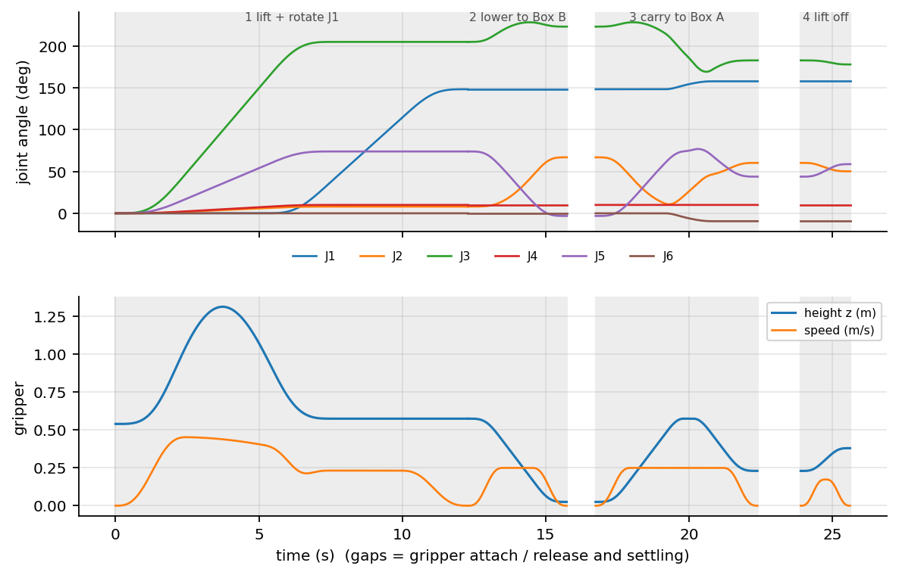
The GUI needs to know if a random position will work before moving the box there. Instead of writing
a second, slightly different planner (which would drift out of sync), workspace.py borrows the planner's own
methods. _PlanChecker is a tiny class that has the same _solve and _cartesian_path
methods as PickPlaceController (Python lets you copy a function into another class) and a fake
get_parameter that returns the defaults. No ROS node is created.
28# Defaults mirror the parameters declared by PickPlaceController. 29DEFAULT_PARAMETERS = { 30 "box_a_x": 0.50, 31 "box_a_y": 0.50, 32 "box_a_top_z": 0.20, 33 "box_b_center_z": BOX_B_SIZE[2] / 2.0, 34 "clearance_height": 0.55, 35 "retreat_height": 0.15, 36 "speed_scale": SAFE_SPEED_SCALE, 37 "cartesian_speed": CARTESIAN_SPEED, 38 "cartesian_acceleration": CARTESIAN_ACCELERATION, 39 "blend_radius": BLEND_RADIUS, 40} 41BOX_A_SIZE = 0.30 42# Keep Box B this far (edge to edge) from Box A and inside these radii. 43BOX_A_MARGIN = 0.05 44MIN_RADIUS = 0.30 # stay clear of the robot base 45MAX_RADIUS = MAX_HORIZONTAL_REACH - 0.05 46 47 48@dataclass 49class _Parameter: 50 value: float 51 52 53class _PlanChecker: 54 """Just enough of PickPlaceController to run its planning methods.""" 55 56 _solve = PickPlaceController._solve 57 _cartesian_path = PickPlaceController._cartesian_path 58 _cartesian_trajectory = PickPlaceController._cartesian_trajectory 59 60 def __init__(self, parameters: dict[str, float]) -> None: 61 self._parameters = parameters 62 63 def get_parameter(self, name: str) -> _Parameter: 64 return _Parameter(self._parameters[name])
73def check_box_b( 74 x: float, y: float, parameters: dict[str, float] | None = None 75) -> str | None: 76 """Return None if the pick-and-place plan works for Box B at (x, y), 77 otherwise a short reason why it does not.""" 78 p = {**DEFAULT_PARAMETERS, **(parameters or {})} 79 radius = math.hypot(x, y) 80 if radius < MIN_RADIUS: 81 return f"too close to the robot base ({radius:.2f} m)" 82 if radius > MAX_RADIUS: 83 return f"outside the reach ({radius:.2f} m)" 84 if overlaps_box_a(x, y, p): 85 return "on or next to Box A" 86 87 planner = _PlanChecker(p) 88 flange = np.array([0.0, 0.0, GRIPPER_LINK_OFFSET]) 89 box_b = np.array([x, y, p["box_b_center_z"]]) 90 pick_pose = box_b + flange 91 clear_pose = box_b + np.array([0.0, 0.0, p["clearance_height"]]) + flange 92 destination = np.array( 93 [p["box_a_x"], p["box_a_y"], p["box_a_top_z"] + BOX_B_SIZE[2] / 2.0] 94 ) 95 release_pose = destination + flange + np.array([0.0, 0.0, 0.005]) 96 above_box_a = np.array([destination[0], destination[1], clear_pose[2]]) 97 try: 98 # Same steps, in the same order, as PickPlaceController.run_demo. 99 q_clear = planner._solve(clear_pose, UPRIGHT_REFERENCE_CONFIGURATION) 100 q = planner._cartesian_path(q_clear, [clear_pose, pick_pose])[-1].positions 101 q = planner._cartesian_path( 102 q, [pick_pose, clear_pose, above_box_a, release_pose] 103 )[-1].positions 104 retreat_pose = release_pose + np.array([0.0, 0.0, p["retreat_height"]]) 105 planner._cartesian_path(q, [release_pose, retreat_pose]) 106 except (ValueError, np.linalg.LinAlgError) as error: 107 return str(error) 108 return None
random_box_b picks points uniformly over the ring between 0.30 m and 0.877 m (taking the square root
of a uniform number makes the points uniform by area, not crowded at the centre), skips points near Box A,
and returns the first one that passes. A passing check takes about 1.5–3 s (thousands of IK solves); a failing
one usually fails in the first IK solve, in milliseconds.
111def random_box_b( 112 rng: np.random.Generator | None = None, 113 parameters: dict[str, float] | None = None, 114 attempts: int = 40, 115) -> tuple[float, float]: 116 """Pick a random Box B position that passes ``check_box_b``.""" 117 rng = rng or np.random.default_rng() 118 for _ in range(attempts): 119 # Uniform over the annulus area, any direction around the base. 120 radius = math.sqrt(rng.uniform(MIN_RADIUS ** 2, MAX_RADIUS ** 2)) 121 angle = rng.uniform(-math.pi, math.pi) 122 x, y = round(radius * math.cos(angle), 3), round(radius * math.sin(angle), 3) 123 if overlaps_box_a(x, y, parameters): 124 continue 125 if check_box_b(x, y, parameters) is None: 126 return x, y 127 raise RuntimeError(f"no reachable Box B position found in {attempts} tries")
/world/gp7_pick_place/set_pose through the gz
command line tool:61 def _reset_box_b(self) -> None: 62 world_name = str(self.get_parameter("world_name").value) 63 x = float(self.get_parameter("box_b_x").value) 64 y = float(self.get_parameter("box_b_y").value) 65 z = float(self.get_parameter("box_b_center_z").value) 66 67 req = ( 68 f'name: "BoxB", ' 69 f"position: {{x: {x}, y: {y}, z: {z}}}, " 70 f"orientation: {{x: 0.0, y: 0.0, z: 0.0, w: 1.0}}" 71 ) 72 cmd = [ 73 "gz", 74 "service", 75 "-s", 76 f"/world/{world_name}/set_pose", 77 "--reqtype", 78 "gz.msgs.Pose", 79 "--reptype", 80 "gz.msgs.Boolean", 81 "--timeout", 82 "3000", 83 "--req", 84 req, 85 ] 86 result = subprocess.run(cmd, capture_output=True, text=True) 87 if result.returncode == 0: 88 self.get_logger().info(f"BoxB reset to ({x:.3f}, {y:.3f}, {z:.3f}) m") 89 else: 90 self.get_logger().warning(f"Failed to reset BoxB pose: {result.stderr.strip()}")
Tkinter (Python's built-in GUI toolkit) runs its own endless loop (root.mainloop()) that handles
clicks and redraws. ROS also needs spinning. The GUI solves this with a timer: every 100 ms Tk calls
refresh(), which spins ROS until no new messages are waiting, prints new log lines, and redraws the plots.
356 def refresh(self) -> None: 357 # Process every waiting ROS message, then redraw. 358 for _ in range(500): 359 before = self.node.message_count 360 rclpy.spin_once(self.node, timeout_sec=0.0) 361 if self.node.message_count == before: 362 break 363 while not self.log_queue.empty(): 364 self.log(self.log_queue.get_nowait()) 365 366 self._update_box_b() 367 if self.node.times: 368 self._update_readouts() 369 self._update_plots() 370 self.canvas.draw_idle() 371 self._refresh_job = self.root.after(REFRESH_MS, self.refresh)
JointMonitor is a node that keeps the last 30 s of joint angles, joint speeds, gripper position (via FK)
and gripper speed, at most 50 samples per second. If simulated time jumps backwards, Gazebo was restarted, so it
clears the buffers.
76 def _on_joint_state(self, message: JointState) -> None: 77 self.message_count += 1 78 stamp = message.header.stamp.sec + message.header.stamp.nanosec * 1.0e-9 79 if self.times and stamp - self.times[-1] < RECORD_PERIOD: 80 if stamp >= self.times[-1]: 81 return # downsample (and drop duplicates from extra bridges) 82 self.clear() # simulation time jumped back: Gazebo was restarted 83 names = [name.replace("/", "::").split("::")[-1] for name in message.name] 84 index = {name: i for i, name in enumerate(names)} 85 if not all(name in index for name in JOINT_NAMES): 86 return 87 q = np.array([message.position[index[n]] for n in JOINT_NAMES]) 88 tool = gripper_position(q) 89 if self.times: 90 dt = stamp - self.times[-1] 91 velocity = (q - self.joints[-1]) / dt 92 speed = float(np.linalg.norm(tool - self.tool[-1]) / dt) 93 else: 94 velocity, speed = np.zeros(6), 0.0 95 self.times.append(stamp) 96 self.joints.append(q) 97 self.velocities.append(velocity) 98 self.tool.append(tool) 99 self.tool_speed.append(speed) 100 while self.times and stamp - self.times[0] > HISTORY_SECONDS: 101 for buffer in (self.times, self.joints, self.velocities, self.tool, self.tool_speed): 102 buffer.popleft()
ProcessRunner starts one ros2 run ... at a time with subprocess.Popen, reads its output line by
line in a background thread, and puts each line in a queue that refresh() prints. Stop sends
SIGINT (the same as pressing Ctrl+C).
109class ProcessRunner: 110 """Runs one ros2 command at a time and streams its output to a queue.""" 111 112 def __init__(self, output: queue.Queue[str]) -> None: 113 self.output = output 114 self.process: subprocess.Popen[str] | None = None 115 self.name = "" 116 117 @property 118 def running(self) -> bool: 119 return self.process is not None and self.process.poll() is None 120 121 def start(self, name: str, command: list[str]) -> bool: 122 if self.running: 123 self.output.put(f"[gui] {self.name} is still running; stop it first") 124 return False 125 self.name = name 126 self.output.put(f"[gui] starting {name}") 127 self.process = subprocess.Popen( 128 command, 129 stdout=subprocess.PIPE, 130 stderr=subprocess.STDOUT, 131 text=True, 132 bufsize=1, 133 start_new_session=True, 134 ) 135 threading.Thread(target=self._pump, args=(self.process, name), daemon=True).start() 136 return True 137 138 def _pump(self, process: subprocess.Popen[str], name: str) -> None: 139 assert process.stdout is not None 140 for line in process.stdout: 141 self.output.put(line.rstrip()) 142 self.output.put(f"[gui] {name} finished (exit code {process.wait()})") 143 144 def stop(self) -> None: 145 if self.running: 146 self.output.put(f"[gui] stopping {self.name}") 147 self.process.send_signal(signal.SIGINT)
The search can take a few seconds, so it runs in a thread. Tk widgets may only be touched from the main
thread, so the thread hands the result back with root.after(0, ...), which schedules a call on the
main thread.
307 def place_random_box_b(self) -> None: 308 if self.runner.running: 309 self.log(f"[gui] {self.runner.name} is still running; stop it first") 310 return 311 self.random_button.state(["disabled"]) 312 self.log("[gui] searching for a reachable random Box B position ...") 313 # IK checks take a second or two: keep them off the Tk thread. 314 threading.Thread(target=self._random_worker, daemon=True).start()
316 def _random_worker(self) -> None: 317 try: 318 result: tuple[float, float] | str = random_box_b() 319 except RuntimeError as error: 320 result = str(error) 321 self.root.after(0, self._random_done, result)
323 def _random_done(self, result: tuple[float, float] | str) -> None: 324 self.random_button.state(["!disabled"]) 325 if isinstance(result, str): 326 self.log(f"[gui] {result}") 327 return 328 x, y = result 329 self.box_x.set(x) 330 self.box_y.set(y) 331 self.log(f"[gui] Box B -> ({x:.3f}, {y:.3f}) m (plan checked)") 332 self.reset_world() # teleports Box B there and homes the arm
Besides starting the programs, the launch file edits the robot description in memory:
ros2_control and gazebo tags from the SolidWorks URDF (not compatible);world link and a fixed joint, bolting the robot base to the ground;164def generate_launch_description(): 165 package_path = get_package_share_directory("gp7robot_description") 166 urdf_path = os.path.join(package_path, "urdf", "GP7.urdf") 167 default_world = os.path.join(package_path, "worlds", "gp7_pick_place_reachable.sdf") 168 robot_description = _simulation_robot_description(urdf_path) 169 170 world_arg = DeclareLaunchArgument( 171 "world", 172 default_value=default_world, 173 description="World SDF; choose gp7_task_spec.sdf to load the exact assignment layout", 174 ) 175 robot_state_publisher = Node( 176 package="robot_state_publisher", 177 executable="robot_state_publisher", 178 parameters=[{"robot_description": robot_description, "use_sim_time": True}], 179 output="screen", 180 ) 181 182 headless_arg = DeclareLaunchArgument( 183 "headless", 184 default_value="false", 185 description="Run the Gazebo server only (no GUI)", 186 ) 187 gazebo = ExecuteProcess( 188 cmd=["gz", "sim", "-r", "-v", "2", LaunchConfiguration("world")], 189 output="screen", 190 condition=UnlessCondition(LaunchConfiguration("headless")), 191 ) 192 gazebo_headless = ExecuteProcess( 193 cmd=["gz", "sim", "-r", "-s", "-v", "2", LaunchConfiguration("world")], 194 output="screen", 195 condition=IfCondition(LaunchConfiguration("headless")), 196 ) 197 198 bridge = Node( 199 package="ros_gz_bridge", 200 executable="parameter_bridge", 201 arguments=[ 202 "/clock@rosgraph_msgs/msg/Clock[gz.msgs.Clock", 203 "/model/GP7Robot/joint_trajectory@trajectory_msgs/msg/JointTrajectory]gz.msgs.JointTrajectory", 204 "/gp7/gripper/attach@std_msgs/msg/Empty]gz.msgs.Empty", 205 "/gp7/gripper/detach@std_msgs/msg/Empty]gz.msgs.Empty", 206 "/world/gp7_pick_place/model/GP7Robot/joint_state@sensor_msgs/msg/JointState[gz.msgs.Model", 207 ], 208 remappings=[("/world/gp7_pick_place/model/GP7Robot/joint_state", "/joint_states")], 209 output="screen", 210 ) 211 212 spawn_robot = Node( 213 package="ros_gz_sim", 214 executable="create", 215 arguments=[ 216 "-topic", 217 "robot_description", 218 "-name", 219 "GP7Robot", 220 "-x", 221 "0", 222 "-y", 223 "0", 224 "-z", 225 "0", 226 ], 227 output="screen", 228 ) 229 230 pick_place = Node( 231 package="gp7robot_description", 232 executable="gp7_pick_place", 233 parameters=[{"use_sim_time": True}], 234 output="screen", 235 condition=IfCondition(LaunchConfiguration("run_demo")), 236 ) 237 run_demo_arg = DeclareLaunchArgument( 238 "run_demo", 239 default_value="true", 240 description="Start the pick-and-place demo automatically", 241 ) 242 243 resource_paths = [os.path.dirname(package_path)] 244 existing_resource_paths = os.environ.get("GZ_SIM_RESOURCE_PATH", "") 245 if existing_resource_paths: 246 resource_paths.append(existing_resource_paths) 247 gazebo_resources = SetEnvironmentVariable( 248 name="GZ_SIM_RESOURCE_PATH", 249 value=os.pathsep.join(resource_paths), 250 ) 251 252 return LaunchDescription( 253 [ 254 world_arg, 255 headless_arg, 256 run_demo_arg, 257 gazebo_resources, 258 robot_state_publisher, 259 gazebo, 260 gazebo_headless, 261 bridge, 262 TimerAction(period=5.0, actions=[spawn_robot]), 263 TimerAction(period=10.0, actions=[pick_place]), 264 ] 265 )
Start order: Gazebo, bridge and robot_state_publisher immediately; the robot is spawned after 5 s (Gazebo
must be ready); the planner after 10 s, only if run_demo is true.
Sends a trajectory with a single point: "be at this angle at time duration"; the other joints get their
current angle so they hold still. It refuses moves larger than --max-step (0.5 rad) unless you raise it.
ros2 run gp7robot_description gp7_move_joint Joint2 0.3 --duration 2
To tie everything together, follow one command from Python to a moving joint and back:
_cartesian_path returns ~2400 TrajectorySamples (12 s at 5 ms).joint_trajectory_message packs them into one JointTrajectory with the header stamp = now
(sim time) and the 6 joint names.trajectory_publisher.publish(message) sends it on /model/GP7Robot/joint_trajectory (ROS 2's
transport is DDS).gz.msgs.JointTrajectory on the Gazebo topic of the same name.sensor_msgs/JointState on
/joint_states._joint_state_callback in the planner stores them; _execute compares them with the goal. The GUI's
JointMonitor stores them too and plots them.# terminal 1 cd ~/Documents/GitHub/YASCAWA_GP7_sim/gp7_ws source install/setup.bash ros2 launch gp7robot_description gazebo_sim.launch.py run_demo:=false # terminal 2 cd ~/Documents/GitHub/YASCAWA_GP7_sim/gp7_ws source install/setup.bash ros2 run gp7robot_description gp7_gui
After editing code: colcon build --packages-select gp7robot_description, then restart the GUI (programs the
GUI starts with Start task pick up the new build automatically; the GUI's own code and the random-placement
checker need a GUI restart).
| Argument | Default | Meaning |
|---|---|---|
run_demo | true | start the task automatically 10 s after launch |
headless | false | run Gazebo without its window (server only) |
world | gp7_pick_place_reachable.sdf | which world file to load |
gp7_pick_place --ros-args -p name:=value)| Parameter | Default | Meaning |
|---|---|---|
| box_a_x, box_a_y | 0.50, 0.50 | Box A centre (m) |
| box_a_top_z | 0.20 | height of Box A's top (m) |
| box_b_x, box_b_y | 0.35, 0.25 | Box B start (m) – the GUI sets these |
| box_b_center_z | 0.025 | height of Box B's centre |
| clearance_height | 0.55 | how high Box B is lifted before moving across |
| retreat_height | 0.15 | how far the arm lifts after releasing |
| speed_scale | 0.30 | fraction of datasheet joint speeds allowed |
| cartesian_speed | 0.25 | tool speed on straight lines (m/s) |
| cartesian_acceleration | 0.40 | tool acceleration (m/s²) |
| blend_radius | 0.10 | corner arc radius (m) |
| use_sim_time | (set true) | follow Gazebo's clock |
cartesian_speed/cartesian_acceleration and speed_scale together. Watch
the GUI: if joint errors grow (warnings "finished X degrees from the target"), the PID cannot keep up.cartesian_acceleration (longer, gentler ramps) or raise blend_radius.clearance_height.DEFAULT_PARAMETERS and must match.| Symptom / message | Cause | Fix |
|---|---|---|
Package 'gp7robot_description' not found | terminal not sourced | source install/setup.bash |
| My code change does nothing | ROS runs install/, not src/ | rebuild with colcon; restart the GUI |
Gazebo bridge did not subscribe to the joint trajectory topic | Gazebo or the bridge is not running, or the robot is not spawned yet | start the launch file, wait ~10 s |
No usable /joint_states ... | robot not spawned, or joint names differ | ros2 topic echo /joint_states to see names |
Target ... GP7 maximum horizontal reach is 0.927 m | Box B too far away | move it closer |
No IK solution within tolerance | pose not reachable with the gripper pointing down from that seed | other position; see the reachability map |
IK branch switch on the upright Cartesian path | the straight line passes near a singularity/limit | other position, or lower clearance_height |
Gazebo did not reach the ... waypoint | PID could not follow (too fast, collision, torque limit) | lower speeds; check for collisions in Gazebo |
| Box B falls / slides off | attach missed, or arm moved before attach | check the "Gripper attach" log line; DetachableJoint needs Box B's model name BoxB, link link |
| GUI: "... is still running; stop it first" | one program at a time | wait, or press Stop |
| Gazebo very slow (real-time factor < 1) | weak GPU / CPU | fine: everything uses sim time; or run headless |
ros2 node list, ros2 topic list, ros2 topic info -v <topic>
(is there a publisher and a subscriber?).ros2 topic echo /joint_states --once.check_box_b(0.6, -0.3) returns None if the
plan works, or the reason it does not.display.launch.py. Move each slider and write down what each joint does.ros2 topic echo /joint_states while the task runs. Which joint moves most?-p cartesian_speed:=0.1 and with 0.4. Compare the GUI speed plot.check_box_b for (−0.5, 0.4). Read the error. Why does it fail? (Hint: chapter 6.6.)retreat_height so the arm goes back to the clearance height after placing._move_joint.box_a_x/box_a_y field to the GUI (and teleport Box A with set_pose, like Box B).| Word | Meaning |
|---|---|
| Bridge | program that converts messages between ROS 2 and Gazebo (ros_gz_bridge) |
| Callback | function ROS calls when a message arrives |
| Cartesian / task space | describing the hand by x, y, z and orientation |
| colcon | ROS 2 build tool; fills install/ |
| DH parameters | 4 numbers per joint (θ, d, a, α) describing an arm's geometry |
| Damped least squares | numerical IK method that stays stable near singularities |
| DetachableJoint | Gazebo system that glues/unglues two models on command – the simulated gripper |
| Flange | the mounting face at the end of the arm (Link6) |
| Forward kinematics | joint angles → hand pose |
| Homogeneous transform | 4×4 matrix holding a rotation and a translation |
| IK branch | one of the several joint solutions for the same hand pose |
| Inverse kinematics | hand pose → joint angles |
| Jacobian | matrix linking joint velocities to hand velocity |
| Jerk | rate of change of acceleration |
| Joint space | describing the robot by its joint angles |
| Launch file | Python script that starts several ROS programs |
| Link | a rigid part of the robot |
| Message | a typed data structure sent on a topic |
| Node | a ROS program (or object) with one job |
| Package | unit of ROS code with a package.xml |
| Parameter | a named setting of a node, changeable at start-up |
| PID | controller computing torque from error, its integral and derivative |
| Pose | position + orientation |
| Publisher / subscriber | sender / receiver on a topic |
| Radian | angle unit; π rad = 180° |
| RViz | ROS 3D viewer (no physics) |
| S-curve | motion profile with smoothly changing acceleration |
| SDF | Gazebo's file format for worlds and models |
| Seed | starting guess for numerical IK |
| Service | request/response call (vs one-way topic) |
| Sim time | the simulator's clock, published on /clock |
| Singularity | pose where the arm loses a direction of motion; J is not invertible |
| Sourcing | loading a setup script so the terminal can find ROS packages |
| Spin | let ROS process incoming messages and call callbacks |
| Topic | named message channel |
| Trajectory | path + timing |
| URDF | ROS XML format describing a robot's links and joints |
| Workspace (robot) | the set of poses the hand can reach |
| Workspace (ROS) | a folder with src/, build/, install/ |